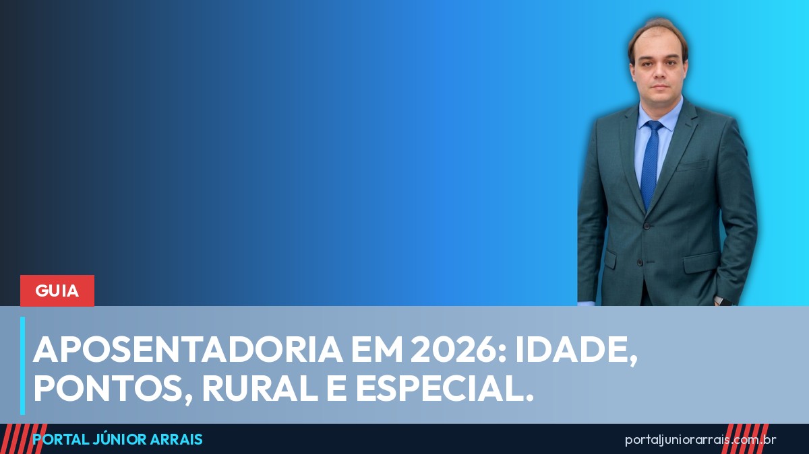

Aposentadoria do INSS em 2026: idade mínima, regra de pontos, transições, rural, especial e como o valor é calculado

Desde a reforma da Previdência (Emenda Constitucional nº 103/2019), não existe mais "a" aposentadoria: existem várias portas, cada uma com requisito e valor diferentes, e as regras de transição ficam mais exigentes a cada ano. Quem faz a conta com o número de dois anos atrás pede o benefício e recebe negativa. Este guia reúne o que vale em 2026 para quem contribui ao INSS e explica por que pedir pela primeira regra que aparece nem sempre é pedir pela melhor.
Os números de 2026
- Piso: nenhum benefício do INSS é menor que o salário mínimo, R$ 1.621;
- Teto: R$ 8.475,55, reajustado em 3,9% pela Portaria Interministerial MPS/MF nº 13/2026. Na prática, mais de 90% das concessões saem com até dois salários mínimos (veja os dados).
Regra permanente: aposentadoria por idade
Para quem trabalha na cidade, a regra que vale para todos exige 65 anos para o homem e 62 para a mulher. A idade não basta: é preciso um tempo mínimo de contribuição de 15 anos para a mulher e, para o homem, 15 anos se já contribuía antes da reforma ou 20 anos se começou a contribuir depois dela. Quem lembra dos 60 anos para a mulher está lembrando da regra antiga. Detalhes em a idade e o tempo mínimo que valem hoje.
As regras de transição para quem já contribuía em 2019
Quem estava filiado ao INSS antes de 13 de novembro de 2019 pode escolher entre a regra permanente e as transições. As principais em 2026:
- Pontos: soma da idade com o tempo de contribuição de 93 pontos para a mulher e 103 para o homem, com tempo mínimo de 30 anos (mulher) e 35 anos (homem). A pontuação sobe um ponto por ano até 100 e 105 (a conta de 2026);
- Idade progressiva: 30 anos de contribuição e 59 anos e 6 meses para a mulher; 35 anos de contribuição e 64 anos e 6 meses para o homem. Sobe seis meses por ano até chegar a 62 e 65;
- Pedágio de 50%: para quem, em novembro de 2019, faltava menos de dois anos para completar 30 ou 35 anos de contribuição; paga-se metade do tempo que faltava, sem idade mínima, com fator previdenciário no cálculo;
- Pedágio de 100%: 57 anos (mulher) ou 60 anos (homem), com 30 ou 35 anos de contribuição mais um período igual ao que faltava em 2019.
Em muitos casos a pessoa já tem direito por mais de uma regra ao mesmo tempo, e cada uma resulta em um valor diferente. Por isso a simulação precisa comparar as portas, não só confirmar a primeira.
Aposentadoria rural
O trabalhador rural em regime de economia familiar, o pescador artesanal e o extrativista, chamados de segurado especial, aposentam-se aos 60 anos (homem) e 55 anos (mulher), com 15 anos de atividade rural, ainda que descontínua, e recebem um salário mínimo. A dificuldade quase nunca está no direito, e sim na prova: testemunha sozinha não basta, é preciso um começo de prova em papel. Veja como comprovar o tempo de roça e quem é segurado especial.
Aposentadoria especial
Quem trabalhou exposto a agente nocivo (ruído, calor, produtos químicos, agentes biológicos) tem direito à aposentadoria especial com 15, 20 ou 25 anos de exposição, conforme o grau de risco. A reforma de 2019 acrescentou idades mínimas de 55, 58 e 60 anos; em junho de 2026 o Supremo Tribunal Federal, na ADI 6309, declarou inconstitucionais essas idades, mas manteve a proibição de converter tempo especial em comum após a reforma e a fórmula de cálculo. Até a publicação do acórdão e a mudança dos sistemas, o INSS segue aplicando as regras anteriores. Acompanhe em o que o STF decidiu e o que ainda falta.
Pessoa com deficiência
A Lei Complementar nº 142/2013 reduz o tempo de contribuição conforme o grau da deficiência (grave, moderada ou leve, definido em avaliação biopsicossocial), sem idade mínima, ou permite aposentar por idade aos 60 anos (homem) e 55 (mulher) com 15 anos de contribuição. A reforma não mexeu nessa regra. É um caminho diferente do BPC e, para quem contribuiu, costuma ser melhor: compare os dois.
Como o valor é calculado
Na regra da reforma, o benefício parte da média de todos os salários de contribuição desde julho de 1994, sem descartar os menores. Sobre essa média aplica-se 60%, mais 2% por ano de contribuição que passar de 15 anos (mulher) ou 20 anos (homem). Com 35 anos de contribuição, o homem chega a 90% da média; a mulher chega a 100% com 35 anos. O resultado nunca fica abaixo do salário mínimo nem acima do teto. As transições com pedágio de 50% usam o fator previdenciário, que pode reduzir bastante o valor para quem se aposenta cedo.
Isso torna decisivo conferir o histórico de contribuições antes de pedir: vínculo que sumiu, período sem data de saída e salário registrado errado derrubam a média ou o tempo. Explicamos em por que conferir o histórico antes de pedir.
Parou de contribuir? Você ainda está protegido por um tempo
Quem deixa de contribuir continua segurado por 12 meses, por 24 meses se já tinha mais de 120 contribuições, e por mais 12 meses em situação de desemprego comprovada: até 36 meses de proteção. Perder a qualidade de segurado não apaga o tempo já contribuído, que segue contando para a aposentadoria. Veja o período de graça.
Cuidado com golpe
Aposentadoria atrai promessa de "revisão que aumenta o benefício de todo mundo", "aposentadoria especial garantida para quem tem laudo" e "liberação em 30 dias" mediante pagamento antecipado. Não existe: o direito depende do tempo comprovado, da regra escolhida e da documentação, e nenhum órgão público cobra taxa para conceder benefício, nem liga pedindo senha, código recebido por mensagem ou dados do cartão. Quem "garante" resultado antes de olhar o histórico está vendendo o que não tem.
Como as regras se sobrepõem e cada uma dá um valor diferente, vale procurar um profissional de sua confiança antes de dar entrada, para conferir o histórico de contribuições, identificar o que falta reconhecer e comparar as portas disponíveis. Pedido negado por regra errada custa meses, e o tempo perdido no vaivém não volta.
Guia permanente, revisado em 8 de setembro de 2026. Conteúdo informativo — não substitui orientação individualizada sobre o seu caso.
Júnior Arrais · Editor do Portal Júnior Arrais
Comunicador de Ubá (MG). Escreve todos os dias sobre benefícios sociais, INSS, trabalho e economia do dia a dia, a partir do Diário Oficial, de portarias e de fontes oficiais, em linguagem simples. Conheça a linha editorial e a política de correções do portal.